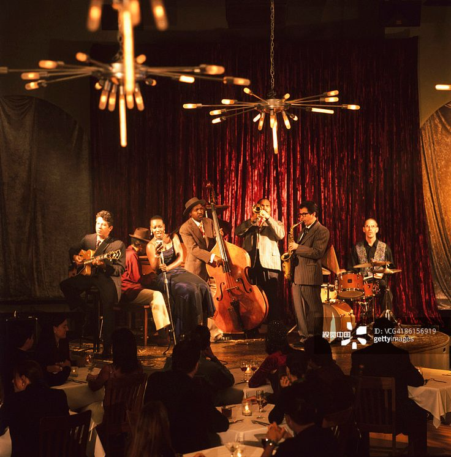

.png)
What's up with Jazz
Jazz a type of music made up of improvisation, history, rhythms, and other musical complexities. Influenced by African music, Caribbean, and European music influences. To define jazz in simply terms would be putting it to shame, so thats why I've made these pages to explore the different kinds of jazz and the importance of it. Jazz is all about exspressing yourself, that's why improvisation is a key element of jazz. Influences from swing music and the blues gives jazz a groovy sound, as well as giving it emotional weight. The music theory that goes into creating a jazz ensemble is like a long complex math equation, with strange chords and complex harmonies. As well as those harmonies another important aspect to jazz is the collaboration between musicians. Similar to a dance, musicians have to listen, and move in their responses, to create a reaction that preforms beautifully together.

Why is Jazz important?
Jazz has made a large impacct on society. It has inspired new genres of music and musicians. Some people would say that jazz has broke down social and racial barriers, connecting people, and promoting freedom and unqiue individuality. Jazz has created an outlet for complete creativity and self expression. During the Civil Rights Movement musicians like Duke Ellington, Miles Davis, and John Coltrane used their power of music to speak up against racism and injustice. Who knew music had the ability to bring people together. Well that's jazz for you.
